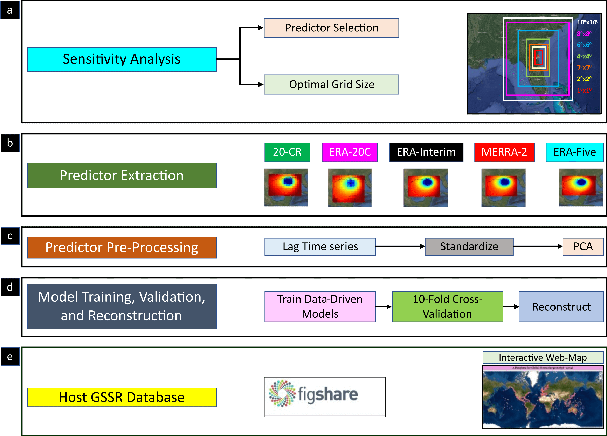

Understanding how the storm surge climate has changed in the past is important to predict the future. Unfortunately, a major hurdle in the study of storm surges is that observational records from tide gauges are often short, making it difficult to assess long-term trends and decadal variability as well as performing robust statistical analyses. For example, as a rule of thumb in extreme value analysis, extrapolation should be limited to return periods not longer than four times the available record length. This means in order to extrapolate to a 100-year storm surge event, at least 25 years of data are needed. However, 45% of the tide gauges in the GESLA-2 database have less than 25 years of data, which clearly limits our ability to derive robust statistics and assess long-term changes.
The Global Storm Surge Reconstruction (GSSR) database includes daily maximum surge values for the past at 882 tide gauges distributed along the global coastline. The data-driven models employed for the surge reconstruction were developed by Tadesse et al. (2020). We use five different atmospheric reanalysis products with different spatial and temporal resolution to produce surge information for the periods covered by the different reanalyses. The web-map above allows the user to download daily maximum surge values for individual tide gauges and reanalysis products. The reanalysis that leads to the best validation results is marked with "best reconstruction" (note that in some locations data is not available for all reanalyses as there is no overlap in the periods covered by the tide gauges and the reanalysis). The full surge reconstruction for each reanalysis (comprised of 882 compressed individual .csv files for the different tide gauges) can be downloaded from the following links:
The data-driven models used to develop GSSR are described in detail in Tadesse et al. (2020).
Validation results of the data-driven models for the surge reconstructions derived with the five different reanalysis products can be downloaded through the following links (note that the validation was carried out for the common period from 1980 to 2010 where all reanalyses have data):
The research that resulted in the development of the GSSR database was funded by the National Aeronautics and Space Administration (NASA) under the New (Early Career) Investigator Program in Earth Science ( grant number: 80NSSC18K0743)
Reports, articles, or manuscripts that make use of GSSR data shall include an acknowledgement to this web site and refer to the paper by Tadesse et al. (2021). We would be grateful to be notified of such papers and, if possible, sent copies of them. The following citation shall be used to refer to the paper:
Article: This database accompanies a Scientific Data paper which can be accessed here
Citation: Tadesse, M.G., Wahl, T. A database of global storm surge reconstructions. Sci Data 8, 125 (2021). https://doi.org/10.1038/s41597-021-00906-x
7. Questions about the Dataset?